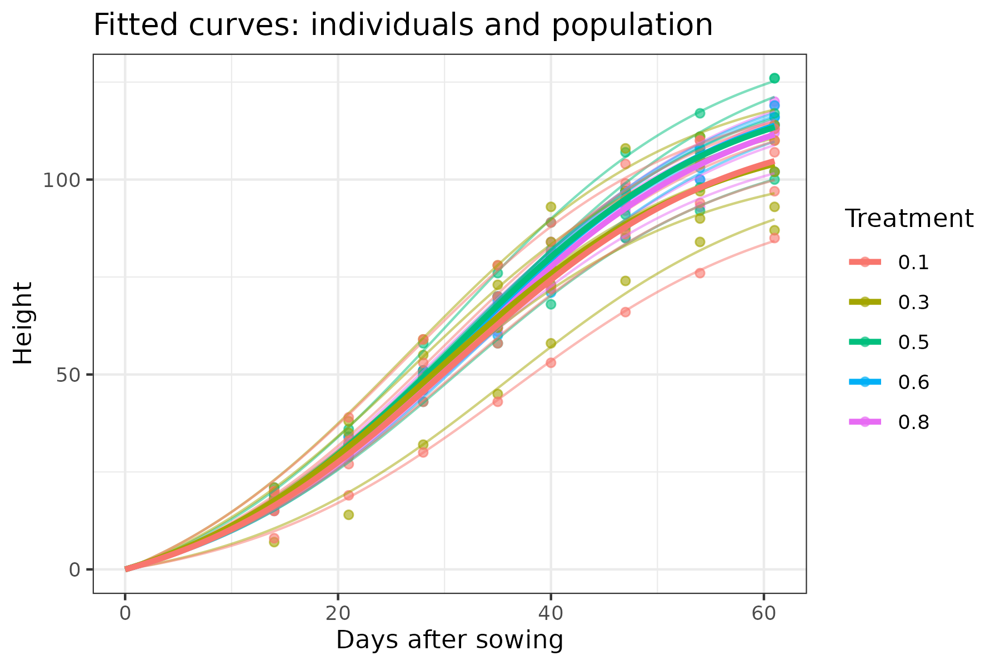

Fixed and random effects
2026-11-20
Source:vignettes/fixed-random-effects.Rmd
fixed-random-effects.RmdThis vignette covers covariates (fixed effects) and random effects of the parameters of the growth curves, and likelihood ratio tests of their inclusion, for the heights of faba bean plants and for counts of pods. The growth models and their parameters are introduced in the vignette Growth models and their parameters.
The models without random effects of that vignette, a single logistic curve and a curve for each treatment:
library(gcTMB)
library(ggplot2)
FabaHeights25$trt <- factor(FabaHeights25$Treatment)
fit <- gcTMB(height ~ DAS, data = FabaHeights25)
fittrt <- gcTMB(height ~ DAS, fform = b1 + b2 ~ trt, data = FabaHeights25)Covariates and random effects
Covariates on the parameters are given by fform,
e.g. b1 + b2 ~ trt for effects of the treatment on the
asymptote and the time of the maximum growth rate. Random effects are
given by rform, e.g. b1 + b2 ~ 1 | plant_ID
for correlated random effects of each plant on the asymptote and the
time of the maximum growth rate, which account for the repeated
measurements of the plants. For the heights, we use the logistic model
with the defaults
and
fixed.
fitre <- gcTMB(height ~ DAS, fform = b1 + b2 ~ trt, rform = b1 + b2 ~ 1 | plant_ID, data = FabaHeights25)
summary(fitre)
#> Call:
#> gcTMB(form = height ~ DAS, fform = b1 + b2 ~ trt, rform = b1 +
#> b2 ~ 1 | plant_ID, data = FabaHeights25)
#>
#> Model: logistic, truncated at b4 = 0
#> Family: gaussian, identity link for all parameters
#>
#> Number of observations: 200, groups: plant_ID 25
#> Log-likelihood: -508.2 (df = 15), AIC: 1046, BIC: 1096
#>
#> Coefficients:
#> Estimate Std. Error
#> b1:(Intercept) 115.7637 4.144
#> b1:trt0.3 -1.9226 5.743
#> b1:trt0.5 9.7398 5.754
#> b1:trt0.6 10.6189 5.758
#> b1:trt0.8 8.2848 5.759
#> b2:(Intercept) 30.8173 1.141
#> b2:trt0.3 -1.4951 1.610
#> b2:trt0.5 0.1777 1.605
#> b2:trt0.6 0.6744 1.605
#> b2:trt0.8 0.9027 1.606
#> b3:(Intercept) 12.8471 0.250
#>
#> Random effects:
#> Groups Name Std.Dev. Corr
#> plant_ID b1 8.834
#> b2 2.395 -0.32
#>
#> Residual standard deviation: 2.076
#>
#> Optimiser: relative convergence (4), maximum absolute gradient 3.7e-05Testing the fixed effects
Likelihood ratio tests by anova() compare nested models,
here with and without the treatment effects.
fitre0 <- gcTMB(height ~ DAS, rform = b1 + b2 ~ 1 | plant_ID, data = FabaHeights25)
anova(fitre0, fitre)
#> Likelihood ratio tests of gcTMB models
#>
#> npar AIC BIC logLik deviance LR Df Pr(>LR)
#> fitre0 7 1041.3 1064.4 -513.67 1027.3
#> fitre 15 1046.3 1095.8 -508.17 1016.3 11.006 8 0.2014For gaussian (and lognormal) models without random effects,
test = "F" gives F-tests as for nls(): the
reduction of the residual sum of squares per additional parameter,
divided by the residual mean square of the larger model. The F-test
accounts for the estimation of the residual variance, which the
likelihood ratio test does not, and is preferable for small experiments;
here for the models without random effects of the vignette Growth
models and their parameters:
anova(fit, fittrt, test = "F")
#> F-tests of gcTMB models
#>
#> npar AIC BIC logLik Res.Df RSS F Df Pr(>F)
#> fit 4 1406.5 1419.7 -699.23 197 12744
#> fittrt 12 1401.8 1441.4 -688.90 189 11492 2.5725 8 0.01096 *
#> ---
#> Signif. codes: 0 '***' 0.001 '**' 0.01 '*' 0.05 '.' 0.1 ' ' 1The two tests disagree, because the model without random effects treats the 200 heights as independent, while they are eight repeated measurements of each of 25 plants.
Testing the random effects
The random effects are tested in the same way, by likelihood ratio tests of the models with and without them: here without random effects, with a random asymptote, and with random asymptotes and times of the maximum growth rate.
fitre1 <- gcTMB(height ~ DAS, fform = b1 + b2 ~ trt, rform = b1 ~ 1 | plant_ID, data = FabaHeights25)
anova(fittrt, fitre1, fitre)
#> Likelihood ratio tests of gcTMB models
#>
#> npar AIC BIC logLik deviance LR Df Pr(>LR)
#> fittrt 12 1401.8 1441.4 -688.90 1377.8
#> fitre1 13 1120.5 1163.3 -547.22 1094.5 283.350 1 < 2.2e-16 ***
#> fitre 15 1046.3 1095.8 -508.17 1016.3 78.104 2 < 2.2e-16 ***
#> ---
#> Signif. codes: 0 '***' 0.001 '**' 0.01 '*' 0.05 '.' 0.1 ' ' 1Under the smaller model, a standard deviation of the random effects
is zero, on the boundary of its range, so the chi-square distribution of
the likelihood ratio statistic is conservative: for a single standard
deviation, the p-value is about twice the correct one. Both random
effects are needed here anyway. test = "boot" gives a
parametric bootstrap likelihood ratio test, which simulates from the
smaller model and does not rely on the chi-square distribution; it fits
both models to each simulation and takes several minutes:
anova(fitre1, fitre, test = "boot", nsim = 100, seed = 1)The random effects of b1 + b2 ~ 1 | plant_ID are
correlated. With a double bar, b1 + b2 ~ 1 || plant_ID,
they are independent, the same as
list(b1 ~ 1 | plant_ID, b2 ~ 1 | plant_ID) and as
random = pdDiag(b1 + b2 ~ 1) in nlme. A list of formulas
mixes the two:
list(b1 + b2 ~ 1 | plant_ID, b3 ~ 1 | plant_ID) gives
correlated random effects of
and
,
and a random effect of
that is independent of both, a block-diagonal covariance matrix as
pdBlocked in nlme. The likelihood ratio test of the
correlated and the independent random effects tests their
correlation:
fitred <- gcTMB(height ~ DAS, fform = b1 + b2 ~ trt, rform = b1 + b2 ~ 1 || plant_ID, data = FabaHeights25)
anova(fitred, fitre)
#> Likelihood ratio tests of gcTMB models
#>
#> npar AIC BIC logLik deviance LR Df Pr(>LR)
#> fitred 14 1046.5 1092.7 -509.25 1018.5
#> fitre 15 1046.3 1095.8 -508.17 1016.3 2.1507 1 0.1425Plotting the curves
plot() with type = "curves" draws a plot
directly: the data with the curve of each plant, and the population
curve of each treatment as a thick line. By default the curves are drawn
over the observed days; times gives the times at which they
are drawn, here from sowing. It returns the ggplot object in a list, for
changing the graph. Otherwise, it can be constructed manually using
predict().
p <- plot(fitre, type = "curves", times = seq(0, 61, by = 0.1), draw = FALSE)
p$curves + labs(x = "Days after sowing", y = "Height", colour = "Treatment")
Non-normal responses
The family argument gives the distribution of the
response: “gaussian”, “lognormal”, “poisson”, “nbinom2”, “nbinom1”,
“binomial”, “betabinomial” or “beta”. The data set
FabaCounts23 contains the numbers of pods of 22 faba bean
plants of six genotypes, counted between 61 and 79 days after sowing.
The plants have no pods at the first counts, so the threshold
,
the time of the first pods, is identified by the zero counts and
estimated; the asymmetry is fixed at
.
A Poisson model with an asymptote and a time of the maximum growth rate
for each genotype, and a random asymptote for each plant:
fitp <- gcTMB(pods ~ DAS, fform = b1 + b2 ~ Genotype, rform = b1 ~ 1 | Tube_ID, data = FabaCounts23,
family = "poisson", fix = c(b4 = FALSE))
summary(fitp)
#> Call:
#> gcTMB(form = pods ~ DAS, fform = b1 + b2 ~ Genotype, rform = b1 ~
#> 1 | Tube_ID, data = FabaCounts23, fix = c(b4 = FALSE), family = "poisson")
#>
#> Model: logistic, truncated at the threshold b4
#> Family: poisson, identity link for all parameters
#>
#> Number of observations: 263, groups: Tube_ID 22
#> Log-likelihood: -353.6 (df = 15), AIC: 737.1, BIC: 790.7
#>
#> Coefficients:
#> Estimate Std. Error
#> b1:(Intercept) 14.5996 2.324
#> b1:GenotypeCapri -3.4020 2.974
#> b1:GenotypeILB938 -5.4787 2.957
#> b1:GenotypeLynx 4.9819 3.233
#> b1:GenotypeMelodie 10.6976 3.676
#> b1:GenotypeNavara 3.1797 3.186
#> b2:(Intercept) 70.0533 0.469
#> b2:GenotypeCapri -0.8504 0.640
#> b2:GenotypeILB938 -1.0084 0.702
#> b2:GenotypeLynx 2.7439 0.551
#> b2:GenotypeMelodie 3.2443 0.552
#> b2:GenotypeNavara 2.6005 0.558
#> b3:(Intercept) 1.3389 0.149
#> b4:(Intercept) 65.0000 0.024
#>
#> Random effects:
#> Groups Name Std.Dev.
#> Tube_ID b1 3.355
#>
#> Pearson dispersion: 0.5005 (chi-square 124.1 on 248 df)
#>
#> Optimiser: converged, with the threshold b4 at an observation time (a kink of the likelihood), maximum absolute gradient 3.2
genotypes <- data.frame(Genotype = sort(unique(FabaCounts23$Genotype)))
cbind(genotypes, predict(fitp, newdata = genotypes, type = "parameters", random = FALSE))
#> Genotype b1 b2 b3 b4
#> 1 Aurora 14.599634 70.05332 1.338935 65
#> 2 Capri 11.197618 69.20292 1.338935 65
#> 3 ILB938 9.120981 69.04494 1.338935 65
#> 4 Lynx 19.581583 72.79718 1.338935 65
#> 5 Melodie 25.297268 73.29758 1.338935 65
#> 6 Navara 17.779358 72.65387 1.338935 65All the counts with the fitted curve of each plant, with its predicted random asymptote:
days <- seq(61, 79, by = 0.05)
ndp <- merge(unique(FabaCounts23[, c("Tube_ID", "Genotype")]), data.frame(DAS = days))
ndp$fit <- predict(fitp, newdata = ndp)
ggplot(FabaCounts23, aes(x = DAS, y = pods, colour = Genotype)) +
geom_point() +
geom_line(data = ndp, aes(y = fit, group = Tube_ID)) +
labs(x = "Days after sowing", y = "Number of pods", colour = "Genotype") +
theme_minimal()
By genotype, the curves of the plants together with the population
curves of the genotypes (random = FALSE), the fixed
effects, with 95% confidence intervals. For Poisson models, the
confidence intervals of the mean are computed on the log scale, so that
they stay positive.
# the population curve of each genotype
ndg <- merge(genotypes, data.frame(DAS = days))
ndg <- cbind(ndg, predict(fitp, newdata = ndg, random = FALSE, interval = "confidence"))
ggplot(FabaCounts23, aes(x = DAS, y = pods)) +
geom_ribbon(data = ndg, aes(x = DAS, ymin = lwr, ymax = upr), inherit.aes = FALSE, fill = "blue", alpha = 0.2) +
geom_line(data = ndp, aes(y = fit, group = Tube_ID), colour = "grey50") +
geom_line(data = ndg, aes(y = fit), colour = "blue", linewidth = 1) +
geom_point(alpha = 0.6) +
facet_wrap(~ Genotype) +
labs(x = "Days after sowing", y = "Number of pods") +
theme_minimal()The estimated threshold improves the fit over the default threshold at sowing: